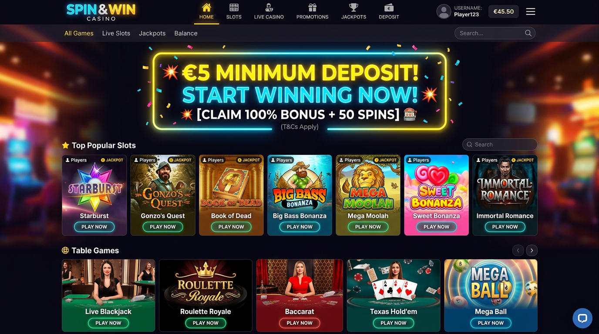
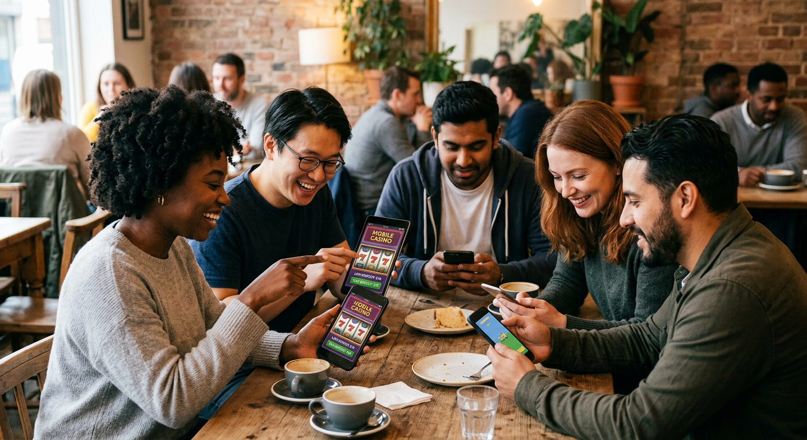
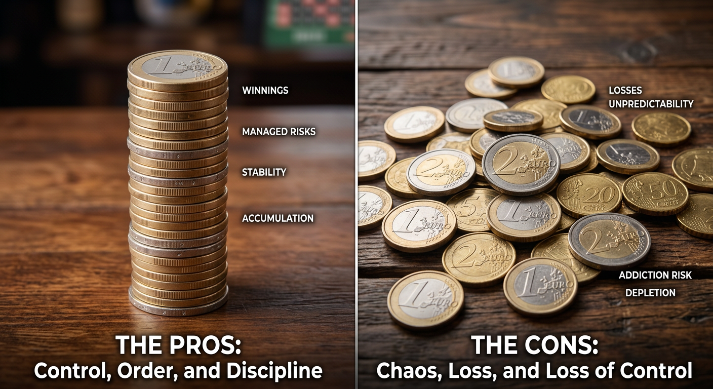
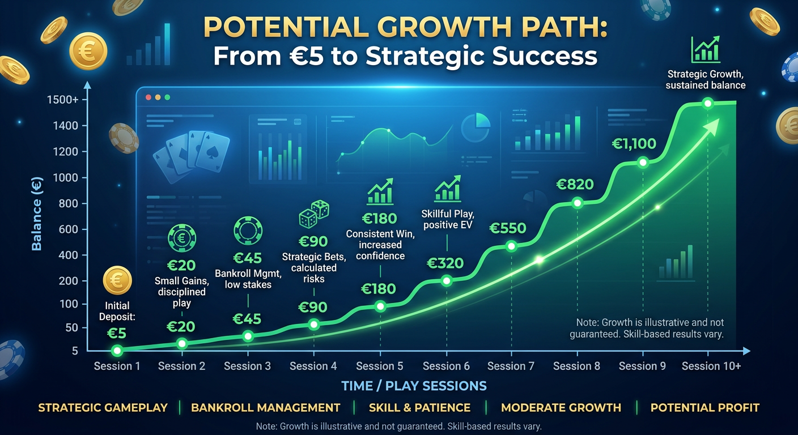

5 euro casino storting: Waar kun je met een klein bedrag gokken?
Het online goklandschap in Nederland is in 2026 volwassener dan ooit. Spelers zijn steeds vaker op zoek naar manieren om met minimale financiële risico's hun favoriete spellen te ontdekken. Een 5 euro casino storting is hiervoor de ideale oplossing. In dit artikel nemen we je mee langs de beste aanbieders, de voordelen van een lage drempel en de meest populaire spellen die je met een klein budget kunt spelen.
De populariteit van platforms die een 5 euro casino storting accepteren, is in 2026 explosief gestegen. Dit komt mede door de strengere regelgeving en het grotere bewustzijn rondom verantwoord spelen. Voor veel recreatieve spelers is vijf euro precies het juiste bedrag om de sfeer van een casino te proeven zonder dat het de maandelijkse begroting beïnvloedt.
Of je nu een fan bent van moderne videoslots of liever aanschuift bij een live tafel, een kleine inleg biedt tegenwoordig verrassend veel mogelijkheden. In de volgende secties duiken we diep in de wereld van de lage stortingen en leggen we uit hoe jij het maximale uit je vijf euro kunt halen bij een online casino.
Wat houdt een minimale storting van 5 euro precies in?
Een minimale storting van 5 euro betekent simpelweg dat de operator de technische en financiële drempel heeft verlaagd. Normaal gesproken hanteren veel aanbieders een limiet van 10 of 20 euro, maar de vraag naar toegankelijkheid heeft geleid tot een toename van de 5 euro casino storting opties. Dit stelt spelers in staat om met een klein bedrag echt geld in te zetten.
Het proces werkt identiek aan een grotere storting. Je logt in op je account, navigeert naar de kassa en kiest een betaalmethode die transacties vanaf dit lage bedrag ondersteunt. Het is een uitstekende manier voor nieuwkomers om de interface van een platform te testen. Voor de ervaren speler is een 5 euro casino storting vaak een tactische keuze om een nieuwe strategie uit te proberen op gokkasten.
In 2026 zien we dat systemen zoals iDeal en moderne e-wallets deze kleine transacties efficiënter verwerken dan voorheen. Hierdoor blijven de transactiekosten voor de operator laag, waardoor zij deze service kunnen blijven aanbieden aan de Nederlandse markt. Het is een win-win situatie voor zowel de speler als het casino.
De beste online casino's in Nederland met een lage drempel

In Nederland zijn er in 2026 diverse legale aanbieders die begrijpen dat niet iedereen direct grote bedragen wil storten. Deze platforms hebben hun systemen geoptimaliseerd voor een 5 euro casino storting, waarbij veiligheid en snelheid voorop staan. Hieronder lichten we enkele topkeuzes toe die uitblinken in toegankelijkheid.
Unibet: Betrouwbaar en toegankelijk
Unibet blijft een dominante speler op de Nederlandse markt. In 2026 hebben zij hun minimale stortingslimieten verder verfijnd. Voor veel Nederlandse spelers is Unibet de eerste keuze vanwege de enorme naamsbekendheid en de integratie met lokale betaalmethoden. Je kunt hier eenvoudig een kleine inleg doen en direct toegang krijgen tot hun uitgebreide aanbod.
Casino 777: Snelle betalingen vanaf €5
Casino 777 staat bekend om zijn elegante uitstraling en snelle verwerkingstijden. In 2026 ondersteunen zij volop de 5 euro casino storting, vooral voor gebruikers die kiezen voor directe bankoverschrijvingen. De software draait soepel, wat essentieel is wanneer je met een beperkt budget speelt en elke draai telt.
Betnation: Ideaal voor de kleine speler
Betnation heeft zich gepositioneerd als een platform dat dicht bij de speler staat. Door een lage drempel te hanteren, trekken zij een breed publiek aan. Hun focus op transparantie en eerlijke kansen maakt hen een uitstekende plek voor wie met een kleine storting van vijf euro wil beginnen.
Kansino: Geen gedoe met limieten
Kansino onderscheidt zich door een "no-nonsense" aanpak. Geen ingewikkelde bonussen die je dwingen om meer te storten, maar gewoon direct spelen. Voor een 5 euro casino storting is dit platform ideaal omdat de focus volledig ligt op de speelervaring en snelle uitbetalingen.
Onze aanbevelingen voor een 5 euro casino storting in 2026
Naast de bekende namen zijn er in 2026 een aantal opkomende platforms die zeer aantrekkelijk zijn voor spelers die een 5 euro casino storting willen doen. Deze aanbieders combineren moderne technologie met een scherp oog voor de behoeften van de Nederlandse consument.
Een uitstekende optie voor de sportliefhebber die ook graag een gokje waagt op slots is Goldbet. Zij bieden een naadloze overgang tussen sportsbook en casino-omgeving. Voor wie op zoek is naar een frisse wind en een innovatief ontwerp, raden we Newlucky aan, waar de gebruikersinterface speciaal is ontworpen voor mobiele spelers.
Als je houdt van een mystiek thema gecombineerd met snelle transacties, dan is Dragobet een sterke kandidaat. Voor een meer klassieke casino-ervaring met moderne extra's kun je terecht bij Fortunicabet. Andere platforms die in 2026 hoge ogen gooien met hun lage stortingslimieten zijn Spinorhino, Lizaro en het mysterieuze Hidden Jack.
Waarom kiezen spelers voor een lage storting?

De keuze voor een kleine inleg is vaak strategisch. Veel spelers willen eerst de kwaliteit van de klantenservice en de snelheid van de uitbetalingen testen voordat ze grotere bedragen toevertrouwen aan een platform. Een 5 euro casino storting fungeert hierbij als een soort 'testrit'. Het stelt je in staat om alle functies van het online casino te verkennen zonder financiële stress.
Daarnaast speelt psychologie een grote rol. Het verliezen van vijf euro wordt door de meeste mensen gezien als een verwaarloosbaar bedrag, vergelijkbaar met de prijs van een kop koffie op een terras in 2026. Dit zorgt voor een ontspannen speelsfeer, wat uiteindelijk de kern van entertainment zou moeten zijn. Bovendien kun je met slim inzetten op games van Pragmatic Play nog steeds een aanzienlijke tijd plezier hebben.
Volgens rapporten van de Wikipedia over gokken in Nederland is de verschuiving naar kleinere, frequentere stortingen een duidelijke trend. Spelers behouden op deze manier meer controle over hun uitgavenpatroon, wat perfect aansluit bij de moderne richtlijnen voor verantwoord gokken.
Voor- en nadelen van gokken met 5 euro

Hoewel een lage instap zeer aantrekkelijk klinkt, zijn er zowel positieve als negatieve kanten aan verbonden. Het is belangrijk om een realistisch beeld te hebben van wat een 5 euro casino storting je kan bieden in 2026.
Voordelen: Risicobeheer en verkenning
- Laag financieel risico: Je kunt nooit meer verliezen dan de waarde van een kleine lunch.
- Toegang tot alle spellen: Ondanks de lage inleg heb je vaak toegang tot het volledige aanbod, inclusief het Live Casino.
- Testen van de provider: Je kunt de interface, laadtijden en mobiele app uitgebreid uitproberen.
- Beheer van speeltijd: Een klein budget dwingt je om bewuster te spelen en lagere limieten te hanteren.
Nadelen: Bonusbeperkingen en transactiekosten
- Bonusvoorwaarden: Veel promoties vereisen een minimale storting van 10 of 20 euro om geactiveerd te worden.
- Beperkte winstpotentie: Tenzij je een enorme vermenigvuldiger raakt op een slot als Gates of Olympus, zijn de absolute winsten vaak kleiner.
- Betaalmethoden: Niet alle methoden staan zulke kleine bedragen toe vanwege de transactiekosten voor de aanbieder.
Hoe een 5 euro casino storting je bankroll beïnvloedt

Het beheren van je saldo is cruciaal wanneer je met kleine bedragen werkt. Een 5 euro casino storting lijkt misschien onbeduidend, maar met een goede strategie kun je lang speelplezier beleven. In 2026 zijn er veel gokkasten met een minimale inzet van slechts €0,10 of zelfs €0,05. Dit betekent dat je met vijf euro wel 50 tot 100 keer kunt spinnen.
Door te kiezen voor spellen met een hoge RTP (Return to Player), vergroot je de kans dat je speelsessie langer duurt. Spelers die vaker een kleine een storting doen, merken vaak dat ze minder snel in de verleiding komen om verliezen na te jagen. Het is een effectieve methode om binnen je persoonlijke limieten te blijven, zoals geadviseerd door instanties die toezien op het CRUKS register.
Voor degenen die liever iets meer ruimte hebben in hun bankroll, kan het soms interessant zijn om te kijken naar een 10 euro deposit casino. Dit verdubbelt je speelduur en opent vaak de deur naar meer bonusmogelijkheden die bij een lagere inleg gesloten blijven.
Populaire betaalmethoden voor kleine bedragen
Niet elke betaalmethode is geschikt voor een 5 euro casino storting. Sommige providers rekenen vaste kosten per transactie, waardoor een klein bedrag niet rendabel is voor het casino. Gelukkig zijn de technologische oplossingen in 2026 zodanig verbeterd dat er genoeg opties overblijven.
iDEAL: De standaard in Nederland
iDeal blijft de meest gebruikte methode. Het is snel, veilig en direct gekoppeld aan je eigen bankomgeving. Veel Nederlandse casino's hebben speciale afspraken gemaakt om een kleine minimale storting via iDEAL mogelijk te maken zonder extra kosten voor de speler.
Creditcard en alternatieve opties
Visa en Mastercard worden overal geaccepteerd, maar let op de voorwaarden van je bank. Daarnaast zien we een opkomst van MiFinity en Paysafecard. Deze laatste is ideaal voor wie anoniem en met een vast bedrag wil spelen. Je koopt simpelweg een kaart van vijf euro en voert de code in bij de kassa van het casino.
In 2026 is ook de adoptie van cryptovaluta in het grijze circuit toegenomen. Hoewel de legale Nederlandse markt strikt gereguleerd is, bieden sommige internationale platforms de mogelijkheid om met Bitcoin of Ethereum een euro deposit te doen. Dit biedt vaak lagere kosten en snellere verwerkingstijden voor kleine bedragen.
Kun je een welkomstbonus claimen met €5?
Dit is een veelgestelde vraag onder spelers die een 5 euro casino storting overwegen. Het eerlijke antwoord in 2026 is: het hangt van de aanbieder af, maar vaak is het lastig. De meeste casino's stellen hun Welkomstbonus in op een minimum van 10 of 20 euro. Ze willen spelers namelijk aanmoedigen om iets meer te investeren.
Er zijn echter uitzonderingen. Sommige moderne casino's bieden een percentagebonus aan waarbij je simpelweg 100% extra krijgt, ongeacht het bedrag. In dat geval zou je van je vijf euro tien euro speelgeld kunnen maken. Het is cruciaal om de kleine lettertjes te lezen. Let vooral op de rondspeelvoorwaarden; deze kunnen soms erg streng zijn bij een kleine minimale storting van een paar euro.
Bovendien zijn er casino's die specifiek promoties hebben voor kleine stortingen om nieuwe doelgroepen aan te boren. Houd de actiepagina's van merken zoals Casoola of andere innovatieve spelers goed in de gaten voor dergelijke unieke kansen.
Herlaadbonus en loyaliteitsprogramma's
Een Herlaadbonus is een fantastische manier om extra waarde te halen uit je vervolgstortingen. Zelfs als je begint met een 5 euro casino storting, kun je bij veel aanbieders in 2026 punten sparen in hun loyaliteitsprogramma. Elke euro die je inzet, draagt bij aan je status binnen het casino.
Wanneer je eenmaal een vaste speler bent, sturen casino's vaak persoonlijke aanbiedingen. Dit kan een Cashback Bonus zijn over je verliezen, of een kleine extra bonus wanneer je opnieuw vijf euro stort op een specifieke dag van de week. Deze vorm van waardering zorgt ervoor dat ook de speler met een kleiner budget zich een VIP kan voelen.
In 2026 zien we dat casino's steeds meer data gebruiken om bonussen op maat aan te bieden. Als het systeem ziet dat jij een voorkeur hebt voor een 5 euro casino storting, zullen zij hun aanbiedingen daarop aanpassen. Dit maakt de ervaring veel persoonlijker en relevanter dan in de beginjaren van het online gokken.
Gratis spins bij een storting van 5 euro
Naast speelgeld zijn Free Spins de meest gewilde extra's. Het is in 2026 zeker mogelijk om spins te ontvangen bij een kleine inleg. Soms krijg je bijvoorbeeld 20 spins op een populaire kast zoals Gates of Olympus alleen al voor het aanmaken van een account en het doen van je eerste kleine storting.
Een interessante trend in 2026 is de "€10 Gratis spins" actie. Hoewel dit boven de vijf euro grens ligt, kiezen veel spelers er op dat moment toch voor om net die vijf euro extra te storten om de bonus te maximaliseren. Het laat zien hoe casino's spelers proberen te verleiden om net iets meer te doen dan de minimale euro deposit.
Toch zijn er platforms die heel specifiek 10 of 20 spins weggeven bij een 5 euro casino storting. Dit is een slimme marketingtruc om de drempel zo laag mogelijk te houden. Voor de speler is het een uitstekende kans om met een investering van vijf euro toch kans te maken op een mooie uitbetaling op de nieuwste Megaways titels.
Welke spellen kun je spelen met een klein budget?
Met een budget van vijf euro wil je spellen kiezen waarbij je inzet klein kan blijven, maar de entertainmentwaarde hoog is. Gelukkig bieden topontwikkelaars zoals NetEnt en Play’n GO talloze opties die perfect passen bij een kleine deposit casino ervaring.
- Gokkasten: Dit is de meest logische keuze. Veel slots laten je al draaien vanaf €0,01 per lijn. Klassiekers van NetEnt zoals Starburst blijven populair omdat ze ook met kleine bedragen veel actie bieden.
- Bingo: In 2026 is online Bingo hipper dan ooit. Je kunt vaak al kaarten kopen voor een paar cent, waardoor je met vijf euro een hele avond onder de pannen bent.
- Live Casino: Hoewel de limieten hier vaak iets hoger liggen, zijn er tegenwoordig 'Low Stakes' tafels voor Roulette en Blackjack waar je vanaf €0,50 kunt inzetten.
- Poker: Micro-stakes Poker toernooien of 'Sit & Go's' zijn uitermate geschikt voor een klein budget. Je traint je vaardigheden zonder grote bedragen te riskeren.
De variëteit aan spellen zorgt ervoor dat een 5 euro casino storting nooit saai hoeft te zijn. Of je nu gaat voor de snelle actie van video slots of de sociale interactie van Live Casino games, er is altijd iets te vinden dat bij jouw speelstijl past.
Veiligheid en CRUKS bij een 5 euro casino storting
Veiligheid is het allerbelangrijkste wanneer je online gokt, ongeacht de hoogte van je inzet. In Nederland wordt dit strikt gecontroleerd door de Kansspelautoriteit. Elk legaal casino met een 5 euro casino storting optie is verplicht aangesloten bij CRUKS (Centraal Register Uitsluiting Kansspelen).
Dit systeem beschermt spelers tegen de risico's van gokverslaving. Als je merkt dat je vaker een een minimale storting doet dan je eigenlijk zou willen, kun je jezelf via dit register uitsluiten van alle legale aanbieders in Nederland. Het feit dat een casino kleine stortingen toestaat, getuigt vaak ook van een maatschappelijke verantwoordelijkheid; ze dwingen je niet om groot in te zetten.
Controleer altijd of het casino over de juiste vergunningen beschikt. In 2026 is het ook gebruikelijk dat casino's transparant zijn over hun RTP percentages en dat hun spellen regelmatig worden gekeurd door onafhankelijke instanties. Dit geeft je de zekerheid dat je met je 5 euro casino storting een eerlijke kans maakt om te winnen.
Vergelijkingstabel van aanbieders
Om je te helpen bij het maken van de juiste keuze, hebben we een overzicht gemaakt van populaire aanbieders in 2026 en hun kenmerken met betrekking tot lage stortingen.
| Casino | Min. Storting | Beste Betaalmethode | Bonus bij €5? | Focus |
|---|---|---|---|---|
| Unibet | €5 | iDEAL | Soms | Sport & Casino |
| Casino 777 | €5 | Bank / Creditcard | Nee | Slots |
| Kansino | €5 | iDEAL | Nee | Snelheid |
| Betnation | €5 | iDEAL / Creditcard | Ja | Cashback |
| Goldbet | €5 | E-wallets | Soms | All-round |
De toekomst van lage stortingen in 2026
De trend van de 5 euro casino storting zal naar verwachting alleen maar sterker worden. Dankzij technologische vooruitgang in de financiële sector worden transactiekosten steeds lager. Banken en betaalproviders in 2026 maken gebruik van blockchain-technologie en directe betaalprotocollen, waardoor zelfs een van euro transactie van één of twee euro rendabel zou kunnen worden.
Bovendien zien we dat de consument in 2026 steeds kritischer wordt. Men wil niet meer vastzitten aan hoge instaplimieten. Casino's die zich niet aanpassen aan deze vraag naar flexibiliteit, zullen marktaandeel verliezen. De opkomst van mobiel gokken versterkt dit nog eens; mensen willen onderweg snel en eenvoudig een kleine euro deposit casino handeling kunnen verrichten.
We verwachten ook dat gamification een grotere rol gaat spelen. Kleine stortingen kunnen worden gekoppeld aan dagelijkse missies of uitdagingen, waardoor de spelervaring meer gaat lijken op die van reguliere mobiele games. Dit maakt gokken met een klein bedrag nog interactiever en leuker.
Veelgestelde vragen over €5 deposits
Hieronder beantwoorden we enkele van de meest gestelde vragen die wij in 2026 ontvangen over gokken met een klein budget.
Is een 5 euro casino storting veilig in Nederland?
Ja, mits je speelt bij een casino met een licentie van de Nederlandse Kansspelautoriteit. Deze casino's zijn veilig, betrouwbaar en aangesloten bij CRUKS.
Kan ik met iDEAL 5 euro storten?
Zeker. iDeal is een van de meest ondersteunde methoden voor een 5 euro casino storting in 2026, vanwege de lage kosten en directe verwerking.
Welke spellen hebben de laagste inzet?
Vooral Gokkasten en Bingo zijn zeer geschikt. Je kunt vaak al inzetten vanaf €0,01 of €0,10 per ronde.
Krijg ik altijd een bonus bij 5 euro?
Nee, veel bonussen vereisen een hogere inleg. Controleer altijd de actievoorwaarden van het specifieke online casino voordat je stort.
Kan ik mijn winst direct uitbetalen?
Ja, bij de meeste casino's kun je winsten die je behaalt met een kleine een storting direct laten uitbetalen naar je bankrekening, vaak al binnen enkele minuten.
Conclusie: Is een 5 euro casino storting de moeite waard?
In 2026 is de conclusie duidelijk: een 5 euro casino storting is een uitstekende manier voor zowel beginners als gevorderden om van online gokken te genieten. Het biedt een perfecte balans tussen entertainment en risicobeheer. Je krijgt toegang tot een wereld van hoogwaardige spellen van providers zoals Pragmatic Play en Play’n GO zonder dat je diep in de buidel hoeft te tasten.
Hoewel de bonussen bij een dergelijk laag bedrag soms beperkt zijn, weegt de vrijheid en controle die je behoudt hier ruimschoots tegenop. Het stelt je in staat om verschillende platforms, zoals Spinorhino of Hidden Jack, op je eigen tempo te ontdekken.
Onthoud altijd dat gokken in de eerste plaats bedoeld is voor plezier. Door te kiezen voor een kleine minimale storting, houd je de ervaring luchtig en verantwoord. Of je nu hoopt op een grote klapper op een Megaways slot of gewoon een uurtje wilt ontspannen bij het Live Casino, met vijf euro ligt de wereld van het casino aan je voeten.

Expert in online casino's en digitaal gokken met meer dan 8 jaar ervaring in de sector.